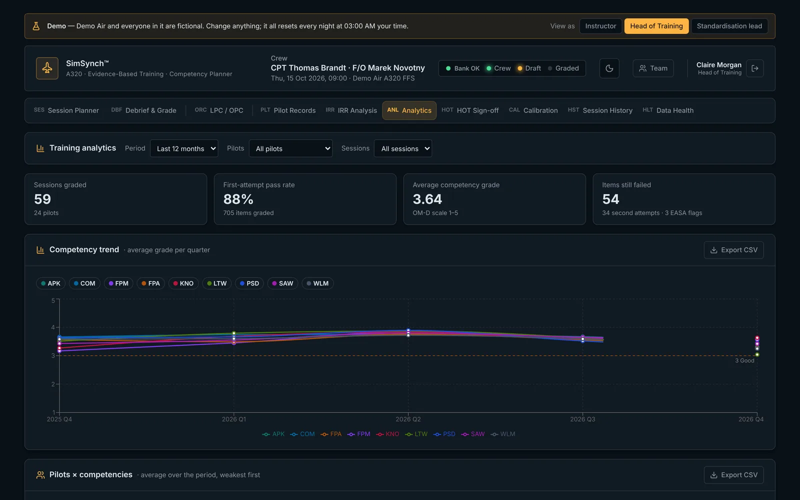
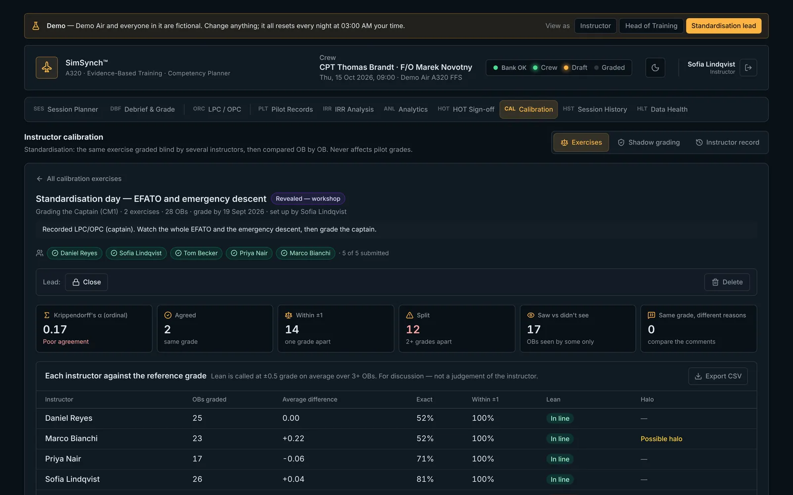
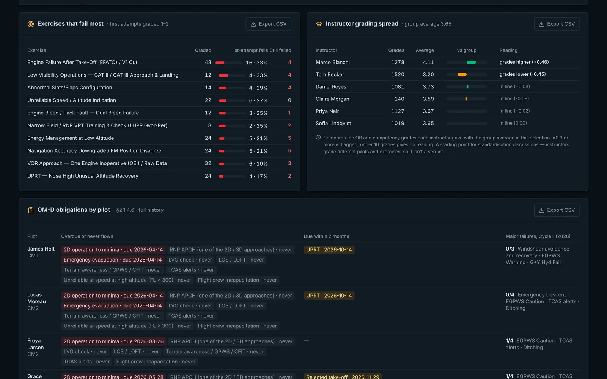
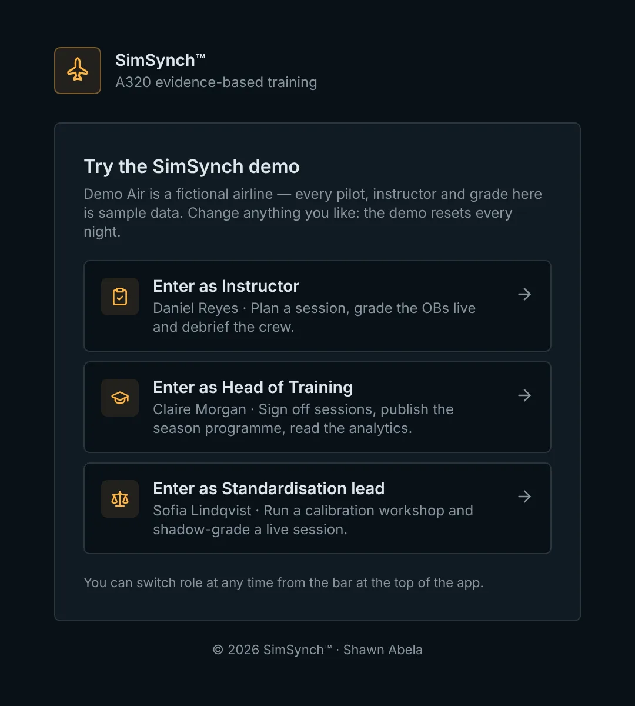
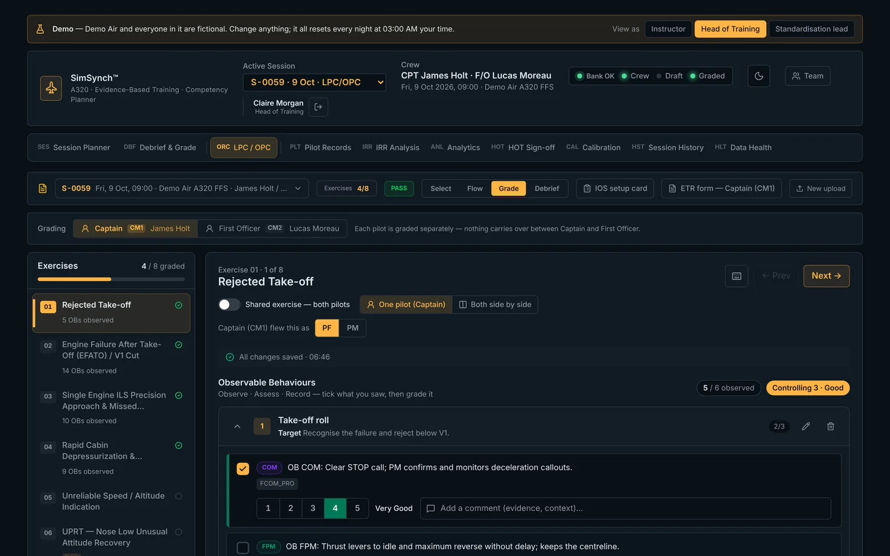
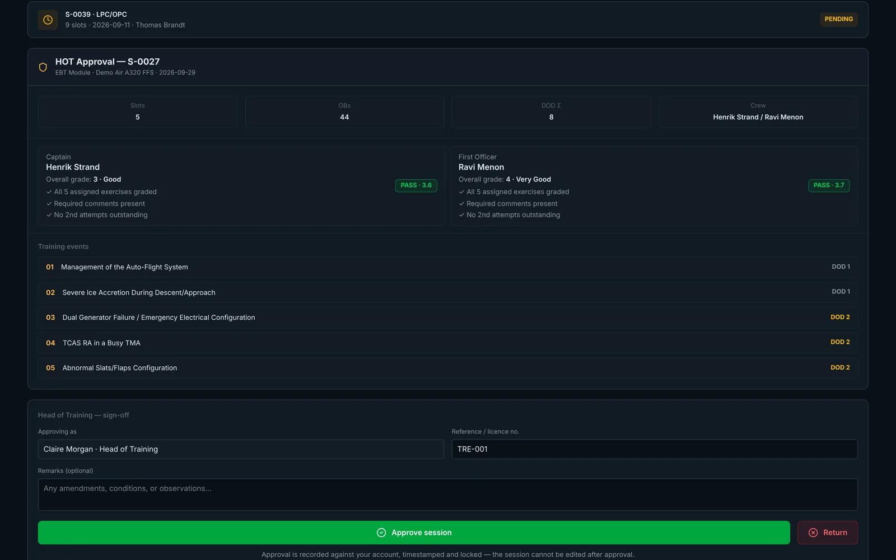
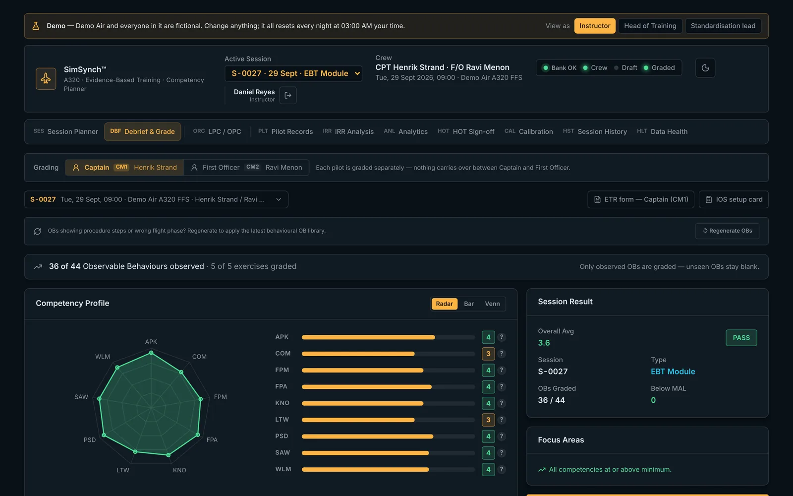
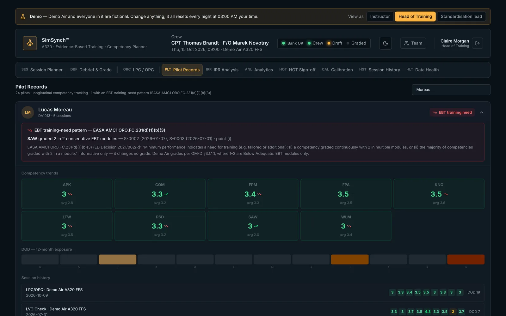

Release notes
What's new in SimSynch™
SimSynch is the A320 evidence-based training platform for simulator instructors and training departments: plan the session, grade the Observable Behaviours live, debrief each pilot, and sign off — all in one place. Here is everything that has changed, newest first.
Instructor calibrationBlind grading workshops, shadow grading and an agreement score for the team.
Training analyticsTrends, failing exercises, instructor spread and EASA training-need flags.
Scenario builderIOS-style board with start positions, weather changes and triggered failures.
Per-pilot gradingCaptain and First Officer graded separately, OB by OB, with a full audit trail.

VERSION 16 · OCTOBER 2026
Standardisation, analytics and a public demo
Tools for the Head of Training and standardisation leads, and an open demo anyone can try.
Instructor calibration New
- Calibration exercises: several instructors grade the same recorded exercise blind — nobody sees anyone else's grades until the lead reveals them.
- Workshop view: OB-by-OB comparison showing agreement, ±1 and split grades, "saw it vs didn't see it", and "same grade, different reasons".
- Instructor lean and halo detection: who grades harsher or more leniently than the group or the lead's optional reference grade, and who gives the same grade to everything.
- Krippendorff's alpha for the exercise — one agreement score with clear good / tentative / poor bands.
- Fleet standards: the agreed standard for an OB is saved and shown to every instructor beside that OB when grading.
- Shadow grading: a standardisation lead grades a live session alongside the instructor, kept completely separate from the pilot's record.
- Calibration record per instructor, with CSV export.

Training analytics New
- Headline figures: sessions, pilots, first-attempt pass rate, second attempts and items still failed.
- Competency trend by quarter and a pilots × competencies heat map.
- Exercises that fail most, and instructor grading spread against the group average.
- EASA training-need patterns (AMC1 ORO.FC.231(d)(1)(b)(3)): a competency graded 2 in consecutive EBT modules, or most competencies at 2 in one module.
- Recurrent obligations by pilot: every-OPC, 12-month and 36-month items and the major-failure cycle — overdue, due soon, and done.
- Every table exports to CSV (opens in Excel).

Accounts and security
- Forgot password: reset by email, choose a new password, and other devices are signed out.
- Standardisation leads chosen by the Head of Training in Team.
- Full pre-launch security review: new accounts have no access until activated, every table protected by row-level security, security headers on every page, all dependency warnings cleared.
Public demo New
- Try it at demo.simsynch.com — one click to enter as Instructor, Head of Training or Standardisation lead, and switch role at any time.
- A fictional airline with a full year of sample training: 24 pilots, 60+ sessions, analytics, sign-offs and a calibration workshop. Resets every night.

Interface
- Cleaner single-line tab bar; session details open from a chip in each tab, with an Incomplete badge when crew or date are missing.
- Recurrent-obligation coverage shown on every LPC / OPC session, per pilot.
- Inter-rater reliability analysis now uses the OB grades, exactly as the debrief does.
VERSION 15 · SEPTEMBER 2026
Scenario builder, programmes and check rules
Build the simulator session the way it is flown, and grade checks exactly by the operator's rules.
Scenario builder
- Per-exercise setup: start position (gate, threshold, final, airborne), weather, and failures with triggers — e.g. engine failure at V1 + 2 kt, or RVR dropping at 1000 ft.
- IOS capture points: a shared library of saved simulator positions per simulator, reused across sessions.
- Mission-path board: exercises shown as IOS console keys with status lamps, and colour-coded waypoints between them (reposition, capture point, freeze, weather change, arm failure, note).
- LVO check builder: creates the complete low-visibility check, fully set up, using the simulator's own malfunction list.
- Printable IOS setup card for the session, and a run mode that remembers where you are.

Season programmes and exercise selection
- Programme library: build the LPC / OPC programme once per season (Jan–Jun, Jul–Dec), publish it, and every instructor starts sessions from it.
- Exercise selection per pilot: mark exercises for both pilots, Captain only, First Officer only, or omitted (with a reason) — grading, debrief and sign-off all follow it.
- LPC / OPC shown in the same flow format as the planner, with day markers.
Grading by the operator's OM-D
- Captain (CM1) and First Officer (CM2) graded separately, with PF / PM recorded per exercise; shared exercises (e.g. UPRT) graded side by side.
- OM-D grading scale and descriptions, and the LPC / OPC verdict counted by failed items.
- Second attempt on a failed item, competency caps after a failure, and required comments for grades 1, 2 and 5.
- Printable ETR form per pilot.
- OB grades always stay with the right behaviour, even when OBs are edited or regenerated.
- Team admin: manage instructors, roles and access from inside SimSynch.

VERSION 14 · SEPTEMBER 2026
Instructor accounts and per-pilot grading
Every grade belongs to a pilot and an instructor — and can't be lost.
Accounts and records
- Instructor sign-in with roles: Instructor, Head of Training, Administrator.
- Per-pilot grading — each pilot has their own OB grades, competency profile and verdict.
- HOT sign-off recorded against the Head of Training's account; approved sessions are locked.
- Grade history: every change — who, when, old and new value — recorded automatically and impossible to edit.

Grading workspace
- The OBs are the judgement: competency results come from the behaviours actually observed; unobserved OBs stay blank and never count against the pilot.
- One overall grade per pilot for the whole session, kept separate from the competency grades.
- One workspace for EBT and LPC / OPC: exercise list, day selector, progress per day, Prev / Next.
- Grades survive connection drops — saved on the device and sent when the connection returns, with live save status.
- Keyboard grading (1–5, Space, arrows), larger touch targets for tablets, and accessible contrast throughout.

VERSIONS 12–13 · SEPTEMBER 2026
Session planning foundations
The planner, the libraries and the sign-off workflow.
Planning
- Session types: LPC / OPC, LOFT, EBT module, FODP, LVO check, TRI / TRE, type rating and custom, each with its own structure.
- Generate a session plan from the scenario bank by phase, difficulty and role — pin the scenarios you like and reroll the rest; EASA structure checks before you build.
- Scenario library ranked by the competencies the session still lacks.
- Malfunction library with causes, consequences and related MEL items; every exercise arrives with its Observable Behaviours attached.
- LPC / OPC from a PDF programme: upload, select exercises, grade — with days, roles and mandatory items read from the document.
Sign-off and records
- Head of Training sign-off with approve / return and remarks; returned sessions come back for correction.
- Pilot records, session history and inter-rater reliability analysis.
